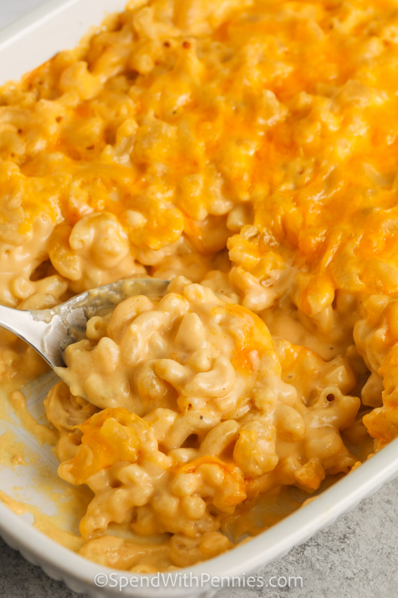

Mac and Cheese

Description
Homemade Mac and Cheese is a rich, creamy casserole and this recipe is truly my favorite!
This dish has so much cheesy sauce, it’s impossible to resist and once you try it, this is going to be the only baked macaroni & cheese recipe you’ll ever need!
Ingredients
- 12 ounces dry elbow macaroni
- ¼ cup butter
- ¼ cup flour
- 1 ½ cups milk
- 1 cup light cream about 10-12% MF
- ½ teaspoon dry mustard powder
- 1 teaspoon onion powder
- salt & pepper to taste
- 1 can condensed cheddar cheese soup optional 10.75 ounces
- 4 cups sharp cheddar divided
- ½ cup fresh parmesan cheese
Steps
- Preheat oven to 425°F.
- Cook macaroni al dente (firm) according to package directions. Drain and run under cold water.
- Melt butter over medium heat in a large saucepan. Whisk in flour and let cook 2 minutes while stirring. Slowly whisk in milk, cream, mustard powder, onion powder, salt & pepper to taste. Cook over medium heat while stirring until thickened.
- Remove from heat and stir in parmesan cheese & 3 cups cheddar cheese until melted. Add soup if using.
- Toss cheese sauce & macaroni noodles together. Pour into a greased 9×13 pan. Top with remaining cheese.
- Bake 18-24 minutes or until bubbly. Do not over cook. Cool 10-15 minutes before serving.